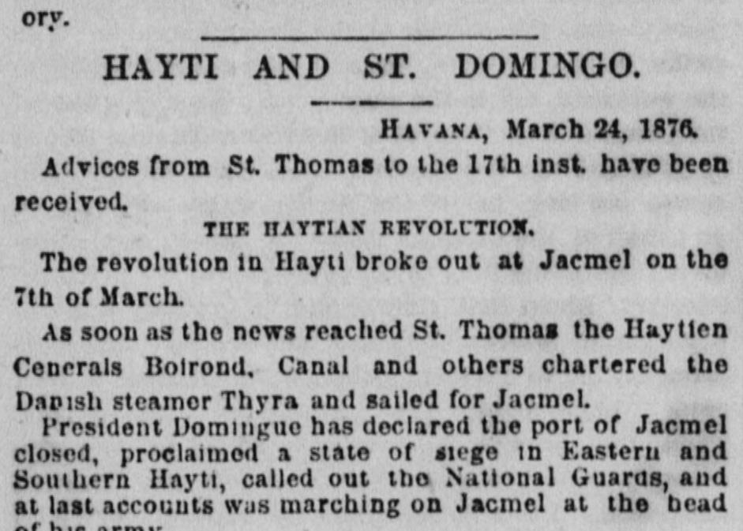
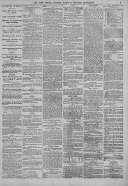

President llomitigiie has doclnred the port of Jacmcl i closed, proclaimedEl presidente Domingue ha declarado cerrado el puerto de Jacmel, proclamado
The New York Herald. New York [N.Y.], March 25, 1876. Page 5. View the originalVer el original


See the full pageVer la página completaIn the St. Domingo portion of the column, the election for President to succeed Gonzalez, who had resigned, was to be held on March 24, with Senor Espaillot and General Luperon as prominent candidates. Ex-President Gonzalez had arrived at Port-au-Prince and been well received by the people.En la parte de la columna dedicada a Santo Domingo, la elección presidencial para suceder a González, que había dimitido, se celebraría el 24 de marzo, con el señor Espaillat y el general Luperón como candidatos destacados. El expresidente González había llegado a Puerto Príncipe y había sido bien recibido por la población.
FULL TEXT:TEXTO COMPLETO:
HAYTI AND ST. DOMINGO.HAITÍ Y SANTO DOMINGO.
HAVANA, March 24, 1876.LA HABANA, 24 de marzo de 1876.
Advices from St. Thomas to the 17th inst. have been received.Se han recibido noticias de Santo Tomás hasta el 17 del corriente.
THE HAYTIAN REVOLUTION.LA REVOLUCIÓN HAITIANA.
The revolution in Hayti broke out at Jacmel on the 7th of March.La revolución en Haití estalló en Jacmel el 7 de marzo.
As soon as the news reached St. Thomas the Haytien Generals Boirond, Canal and others chartered the Danish steamer Thyra and sailed for Jacmel.Tan pronto como la noticia llegó a Santo Tomás los generales haitianos Boirrond, Canal y otros fletaron el vapor danés Thyra y zarparon hacia Jacmel.
President Domingue has declared the port of Jacmel closed, proclaimed a state of siege in Eastern and Southern Hayti, called out the National Guards, and at last accounts was marching on Jacmel at the head of his army.El presidente Domingue ha declarado cerrado el puerto de Jacmel, proclamado un estado de sitio en Haití Oriental y Meridional, llamado a las Guardias Nacionales, y a las últimas noticias estaba marchando sobre Jacmel a la cabeza de su ejército.
The insurgents in Jacmel are led by General Tanis.Los insurgentes en Jacmel están dirigidos por el general Tanis.
THE DOMINICAN PRESIDENCY.LA PRESIDENCIA DOMINICANA.
The election in St. Domingo for President to succeed Gonzalez, resigned, will be held on March 24. Señor Espaillott and General Luperon are prominent candidates. Ex-President Gonzalez has arrived at Port au Prince and been well received by the people.La elección en Santo Domingo para Presidente que suceda a González, renunciado, se celebrará el 24 de marzo. El señor Espaillott y el general Luperón son candidatos prominentes. El ex Presidente González ha llegado a Puerto Príncipe y ha sido bien recibido por el pueblo.